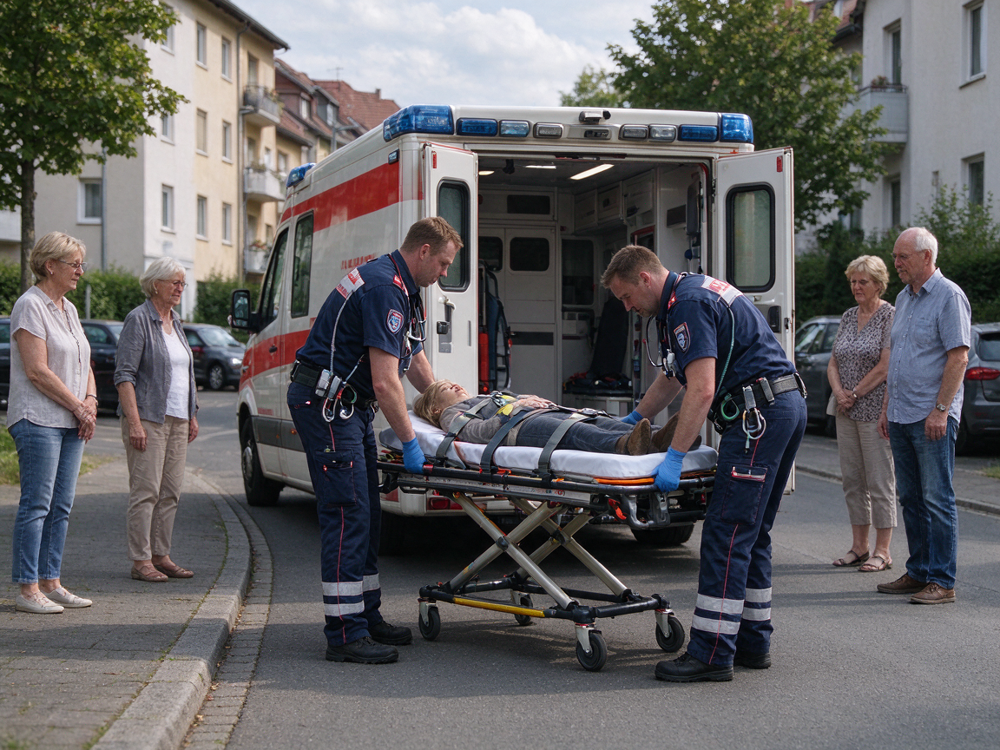
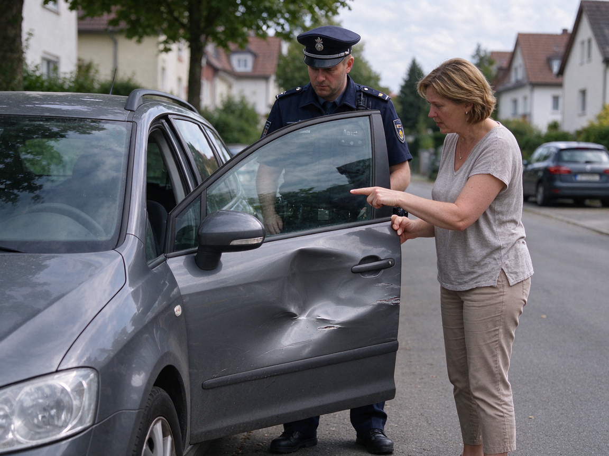

Allgemeine Versicherungsbedingungen · Hausratversicherung
Die Versicherung ersetzt Schäden durch Einbruchdiebstahl, Feuer, Leitungswasser und Sturm. Der Versicherungsnehmer ist verpflichtet, jeden Schaden unverzüglich zu melden, bei Einbruch zusätzlich der Polizei. Wird der Schaden nicht innerhalb einer Woche gemeldet, kann die Leistung gekürzt werden. Wertgegenstände wie Schmuck sind nur bis zu einer Summe von 2.000 Euro versichert. Für Fahrräder gilt der Schutz nur, wenn sie mit einem Schloss gesichert waren.
Selbstbeteiligung
Bei jedem Schadenfall trägt der Versicherungsnehmer eine Selbstbeteiligung von 150 Euro. Bei Schäden unter diesem Betrag erfolgt keine Zahlung.
Nachweise
Zur Prüfung des Schadens kann die Versicherung Rechnungen, Fotos oder Kaufbelege verlangen. Bei Einbruch muss zusätzlich eine Liste aller gestohlenen Gegenstände mit dem Neuwert eingereicht werden.
Auszahlung
Die Auszahlung erfolgt innerhalb von vier Wochen nach Eingang aller Unterlagen. Bei grober Fahrlässigkeit, zum Beispiel unverschlossenen Fenstern, kann die Leistung gekürzt werden.
Kündigung
Der Vertrag kann mit einer Frist von drei Monaten zum Ende des Versicherungsjahres gekündigt werden. Nach einem Schadenfall haben beide Seiten ein Sonderkündigungsrecht von einem Monat.
Die Audiodatei fehlt oder kann nicht geladen werden. Sie können „Hören beenden“ klicken und trotzdem die Aufgaben ansehen.
Aufgabe 1 · Ansagen am Telefon oder per LautsprecherSie hören jeden Text einmal. Zu jedem Text gibt es eine Aufgabe.
1
Was soll die Person zur Polizei mitbringen?
2
Wie viel muss der Kunde selbst zahlen?
3
Was sollen die Bürger bei dem Probealarm tun?
4
Was sollte man bei einer lebensbedrohlichen Verletzung tun?
Aufgabe 2 · Ansagen im RadioSie hören jeden Text einmal.
5
Was soll man bei einem Unfall zuerst tun?
6
Was soll man nach einem Diebstahl sofort machen?
7
Wann werden die Straßen gestreut?
8
Wofür kann man die Teilnahmebescheinigung benutzen?
9
Wie lange wird das Wasser abgestellt?
Aufgabe 3 · GesprächeZu jedem Gespräch lösen Sie zwei Aufgaben.
Gespräch 1 · Anzeige bei der Polizei.
10
Was hat der Mann schon getan?
11
Die Polizei kann das Handy orten.
Gespräch 2 · Ein Unfall auf der Straße.
12
Wie wollen die beiden den Unfall regeln?
13
Der Mann gibt zu, dass er schuld ist.
Gespräch 3 · Ein Notruf.
14
Was soll der Mann tun?
15
Der Verletzte ist bewusstlos.
Gespräch 4 · Bei der Versicherung.
16
Was muss die Frau der Versicherung schicken?
17
Die Versicherung zahlt erst, wenn alle Unterlagen vollständig sind.
Aufgabe 4 · Meinungen: Sicherheit: Wie gehen die drei Personen mit Gefahren um?Sie hören drei Personen.
Sicherheit: Wie gehen die drei Personen mit Gefahren um?
Ordnen Sie die Aussagen den drei Personen zu. Nicht jede Aussage passt. Sie haben eine Minute Zeit zum Lesen.
- a Diese Person hat einen Kurs besucht, um bei Unfällen helfen zu können.
- b Diese Person engagiert sich ehrenamtlich und rückt im Notfall aus.
- c Diese Person hat in die Sicherheit der eigenen Wohnung investiert.
- d Diese Person wurde schon einmal ausgeraubt.
- e Diese Person möchte sich bald versichern.
- f Diese Person hält Sicherheit für überflüssig.
18
Person 1
19
Person 2
20
Person 3
Lesen
45 Min
25 Aufgaben. Die Zeit läuft erst, wenn Sie starten. Sie können auch zuerst Schreiben wählen (links).
Aufgabe 1 · Kataloge, Verzeichnisse, RubrikenLesen Sie das Verzeichnis. Wo finden Sie das? Wählen Sie die richtige Angabe.
Bürgerservice Neuberg · Sicherheit und Notfall
Sie brauchen Hilfe. Welche Stelle ist zuständig?
| Polizeiwache | Anzeigen · Fundsachen · Verkehrsunfälle · Notruf 110 |
|---|---|
| Feuerwehr und Rettungsdienst | Brand · Rettungswagen · Notruf 112 · Erste-Hilfe-Kurse |
| Fundbüro | Verlorene Gegenstände · Rückgabe · Fristen |
| Ordnungsamt | Ruhestörung · Hunde · Müll · Parkverstöße |
| Bürgerbüro | Ausweis · Pass · Führerschein · Ummeldung |
| Versicherungsberatung | Schäden melden · Haftpflicht · Hausrat · Beratung |
1
Sie haben Ihren Ausweis verloren und brauchen einen neuen.
2
Sie haben Ihren Regenschirm im Bus vergessen und möchten ihn zurückholen.
3
Ein Fahrrad wurde Ihnen vor der Haustür gestohlen.
4
Ihr Nachbar feiert jede Nacht sehr laut.
5
In Ihrer Küche brennt es.
Aufgabe 2 · AnzeigenLesen Sie die Anzeigen und ordnen Sie zu.
Welche Anzeige passt zu welcher Situation? Eine Situation hat keine passende Anzeige: Wählen Sie dann x.
a Erste-Hilfe-Kurs für alle: Samstag 9 bis 17 Uhr, Rotes Kreuz, 45 Euro. Anmeldung online oder telefonisch. Die Kurse sind für Anfänger und Fortgeschrittene geeignet. Bitte bringen Sie bequeme Kleidung und etwas zu trinken mit. Teilnahmebescheinigung inklusive.
b Schlüsseldienst Schnell: Tag und Nacht für Sie da! Festpreis ab 69 Euro, kein Aufpreis am Wochenende. Wir öffnen Türen schnell und ohne Beschädigung. Auch Schlösser tauschen wir sofort aus. Zahlung bar oder mit Karte.
c Fahrradwerkstatt Speiche: Reparatur und Sicherheits-Check, Schloss-Beratung, Fahrradcodierung kostenlos. Wir montieren auch neue Fahrradschlösser und Lichtanlagen. Termine nach Vereinbarung, kleine Reparaturen sofort. Geöffnet dienstags bis samstags. Unsere Werkstatt ist in der Innenstadt und liegt direkt an der Straßenbahnhaltestelle.
d Autoversicherung Plus: Jetzt wechseln und bis zu 300 Euro sparen. Beratung telefonisch oder in der Filiale. Alle Angebote sind unverbindlich und kostenlos. Wir vergleichen für Sie mehrere Anbieter. Termine auch am Samstagvormittag möglich.
e Rechtsanwältin Dr. Schulz: Verkehrsrecht, Schadensersatz bei Unfällen, kostenlose Erstberatung. Frau Dr. Schulz ist seit zwanzig Jahren in der Stadt tätig. Termine nach telefonischer Vereinbarung. Parkplätze direkt vor der Kanzlei. Die Kanzlei liegt im Zentrum und ist barrierefrei.
f Fahrschule Mobil: Sicher fahren lernen, Auffrischungskurse für Senioren, Anmeldung jederzeit. Wir bieten Kurse für Autos und Motorräder an. Unser Team spricht mehrere Sprachen. Die ersten Stunden sind besonders günstig. Die Fahrschule liegt am Marktplatz und hat auch Theorieunterricht am Abend.
g Rauchmelder-Aktion: Hausverwaltungen bekommen 20 Prozent Rabatt bei Installation. Die Montage übernehmen unsere Techniker an einem Termin. Die Aktion gilt bis Ende des Jahres. Beratung kostenlos. Fragen zur Rechnung beantwortet unser Kundenservice von Montag bis Freitag.
h Kinderkleiderbasar der Grundschule: Samstag 10 bis 13 Uhr in der Turnhalle. Es gibt auch Spielzeug, Bücher und Babyausstattung. Für Kaffee und Kuchen ist gesorgt. Der Erlös geht an die Schulbibliothek. Wer Kleidung verkaufen möchte, kann sich bis Mittwoch im Sekretariat melden.
6
Sie haben sich ausgesperrt und kommen nicht mehr in Ihre Wohnung.
7
Sie hatten einen Unfall und möchten rechtliche Beratung.
8
Sie wollen Ihr Fahrrad besser gegen Diebstahl schützen.
9
Sie suchen gebrauchte Kinderkleidung.
10
Sie möchten lernen, wie man bei einem Notfall Erste Hilfe leistet.
Aufgabe 3 · Presse und formelle MitteilungenLesen Sie die Texte und lösen Sie die Aufgaben.
Polizeipräsidium Neuberg · Presseinformation
In den vergangenen zwei Wochen kam es in mehreren Straßen im Süden der Stadt zu Einbrüchen in Wohnungen und Kellerräume. Die Täter drangen meist tagsüber ein, wenn niemand zu Hause war. Die Polizei bittet Anwohner um Aufmerksamkeit: Melden Sie fremde Personen im Haus bitte sofort unter der Nummer 110. Außerdem rät die Polizei, Türen auch bei kurzer Abwesenheit abzuschließen und nicht nur zuzuziehen. Bei Fragen oder Hinweisen erreichen Sie die Polizei auch persönlich in der Wache am Marktplatz. Informationen zu Sicherheitsschlössern erhalten Sie kostenlos bei der Kriminalpolizei, ein Termin ist nicht nötig.
In den vergangenen zwei Wochen kam es in mehreren Straßen im Süden der Stadt zu Einbrüchen in Wohnungen und Kellerräume. Die Täter drangen meist tagsüber ein, wenn niemand zu Hause war. Die Polizei bittet Anwohner um Aufmerksamkeit: Melden Sie fremde Personen im Haus bitte sofort unter der Nummer 110. Außerdem rät die Polizei, Türen auch bei kurzer Abwesenheit abzuschließen und nicht nur zuzuziehen. Bei Fragen oder Hinweisen erreichen Sie die Polizei auch persönlich in der Wache am Marktplatz. Informationen zu Sicherheitsschlössern erhalten Sie kostenlos bei der Kriminalpolizei, ein Termin ist nicht nötig.
11
Was empfiehlt die Polizei?
12
Die Einbrüche passierten meistens nachts.
Betreff: Ihr Verkehrsunfall am 3. Mai
Sehr geehrter Herr Aydin, wir haben Ihre Schadensmeldung erhalten. Leider fehlt der Polizeibericht, den wir für die Bearbeitung benötigen. Bitte senden Sie uns diesen bis zum 20. Mai per Post oder E-Mail zu. Sobald alle Unterlagen vollständig sind, prüfen wir Ihren Fall und melden uns innerhalb von zehn Werktagen. Für Rückfragen erreichen Sie uns unter 0221 9988. Falls Sie den Bericht nicht mehr haben, können Sie ihn bei der zuständigen Polizeidienststelle neu anfordern. Wir bitten um Verständnis, dass wir ohne diese Unterlagen keine Zahlung leisten können.
Sehr geehrter Herr Aydin, wir haben Ihre Schadensmeldung erhalten. Leider fehlt der Polizeibericht, den wir für die Bearbeitung benötigen. Bitte senden Sie uns diesen bis zum 20. Mai per Post oder E-Mail zu. Sobald alle Unterlagen vollständig sind, prüfen wir Ihren Fall und melden uns innerhalb von zehn Werktagen. Für Rückfragen erreichen Sie uns unter 0221 9988. Falls Sie den Bericht nicht mehr haben, können Sie ihn bei der zuständigen Polizeidienststelle neu anfordern. Wir bitten um Verständnis, dass wir ohne diese Unterlagen keine Zahlung leisten können.
13
Was muss Herr Aydin bis zum 20. Mai tun?
14
Die Versicherung hat den Schaden schon bezahlt.
Fundbüro der Stadt · Öffnungszeiten und Hinweise
Im Fundbüro können verlorene Gegenstände abgegeben und abgeholt werden. Wir sind montags bis freitags von 8 bis 13 Uhr, donnerstags zusätzlich von 15 bis 18 Uhr für Sie da. Wer einen Fund abholt, muss sich ausweisen und den Gegenstand genau beschreiben können. Fundsachen werden sechs Monate aufbewahrt. Danach werden sie versteigert oder gespendet. Für die Abholung fällt eine Gebühr von drei Euro an. Fundsachen von Fahrrädern werden getrennt gelagert und können nach Terminvereinbarung abgeholt werden. Fragen beantworten wir gern telefonisch während der Öffnungszeiten.
Im Fundbüro können verlorene Gegenstände abgegeben und abgeholt werden. Wir sind montags bis freitags von 8 bis 13 Uhr, donnerstags zusätzlich von 15 bis 18 Uhr für Sie da. Wer einen Fund abholt, muss sich ausweisen und den Gegenstand genau beschreiben können. Fundsachen werden sechs Monate aufbewahrt. Danach werden sie versteigert oder gespendet. Für die Abholung fällt eine Gebühr von drei Euro an. Fundsachen von Fahrrädern werden getrennt gelagert und können nach Terminvereinbarung abgeholt werden. Fragen beantworten wir gern telefonisch während der Öffnungszeiten.
15
Wie lange werden Fundsachen aufbewahrt?
16
Wer etwas abholen möchte, muss sich ausweisen.
Aufgabe 4 · InformationsbroschüreSind die Aussagen richtig oder falsch?
17
Der Schaden muss innerhalb einer Woche gemeldet werden.
18
Schmuck ist in unbegrenzter Höhe versichert.
19
Ungesicherte Fahrräder sind immer versichert.
Aufgabe 5 · Brief ergänzen (Sprachbausteine)Welches Wort passt? Lösen Sie die Aufgaben 20 bis 25.
Sehr geehrte Damen und Herren,
am Samstag wurde in meine Wohnung eingebrochen. Die Täter haben (20) Laptop und Schmuck gestohlen. Außerdem war die Wohnungstür aufgebrochen und ein Fenster beschädigt. Ich habe sofort die Polizei (21) und eine Anzeige erstattet. Der Beamte hat alles genau aufgenommen. Das Aktenzeichen (22) 2205-4411. Ich bitte Sie, mir mitzuteilen, (23) Unterlagen Sie noch benötigen. (24) Schadensliste füge ich diesem Brief bei. Ich hoffe, dass die Versicherung den Schaden (25) übernimmt.
Mit freundlichen Grüßen
Serkan Yildiz
am Samstag wurde in meine Wohnung eingebrochen. Die Täter haben (20) Laptop und Schmuck gestohlen. Außerdem war die Wohnungstür aufgebrochen und ein Fenster beschädigt. Ich habe sofort die Polizei (21) und eine Anzeige erstattet. Der Beamte hat alles genau aufgenommen. Das Aktenzeichen (22) 2205-4411. Ich bitte Sie, mir mitzuteilen, (23) Unterlagen Sie noch benötigen. (24) Schadensliste füge ich diesem Brief bei. Ich hoffe, dass die Versicherung den Schaden (25) übernimmt.
Mit freundlichen Grüßen
Serkan Yildiz
20
Lücke (20)
21
Lücke (21)
22
Lücke (22)
23
Lücke (23)
24
Lücke (24)
25
Lücke (25)
Schreiben
30 Min
Ein Brief, Aufgabe A oder B. Die Zeit läuft erst, wenn Sie starten. Sie können auch zuerst Lesen wählen (links).
Schreiben30 Minuten · ein Brief
Wählen Sie Aufgabe A oder B. Schreiben Sie ca. 80–100 Wörter, behandeln Sie alle vier Punkte, und vergessen Sie Anrede und Gruß nicht.
In Ihre Wohnung wurde eingebrochen. Schreiben Sie an die Versicherung (formell).
Schreiben Sie auf alle vier Punkte:
- Was ist passiert?
- Was haben Sie schon getan?
- Was bitten Sie die Versicherung?
- Was legen Sie bei?
Ihr Freund hatte einen kleinen Unfall. Schreiben Sie ihm (informell).
Schreiben Sie auf alle vier Punkte:
- Wie geht es ihm?
- Was ist Ihnen wichtig?
- Was bieten Sie an?
- Wann besuchen Sie ihn?
0 Wörter
SprechenPaarprüfung · ca. 15 Minuten
Teil 1 · Sich vorstellen
Sie stellen sich vor (ca. 2 Minuten). Danach folgen ein bis zwei Fragen.
- Name
- Geburtsort
- Wohnort
- Arbeit / Beruf
- Familie
- Sprachen
Mögliche Nachfragen: Hatten Sie schon einmal einen Unfall? · Was haben Sie gemacht? · Wie sorgen Sie für Sicherheit?
Teil 2 · Von Erfahrungen berichten
Wählen Sie eines der beiden Fotos (Bild A oder Bild B). Beschreiben Sie es und berichten Sie von Ihren Erfahrungen (3–4 Minuten).
Bild A
'">
'+this.alt+'Bild B
'">
'+this.alt+'Teil 3 · Gemeinsam etwas planen (4–5 Minuten)
Sie möchten mit Kollegen einen Erste-Hilfe-Kurs für die Firma organisieren. Planen Sie zusammen.
- Wann und wo?
- Wer nimmt teil?
- Kosten
- Anmeldung
- Wer organisiert?
Üben Sie jeden Teil laut. Nehmen Sie sich selbst auf: Sie hören die Aufnahme danach an, und der Text wird mitgeschrieben.